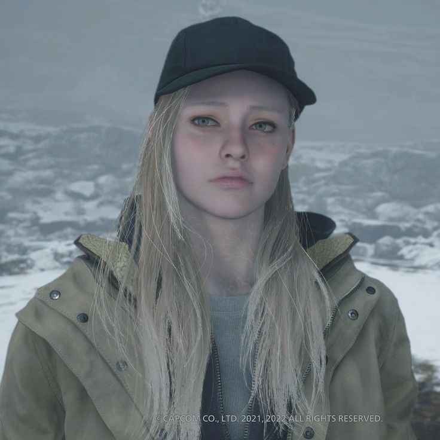

Ethan Winters
Returns to face a new nightmare when Rose is kidnapped by a sinister village cult
Mia Winters
Abducted and impersonated by Mother Miranda, later rescued by Chris Redfield

Rosemary “Rose” Winters
Ethan and Mia’s daughter, key to Miranda’s plan and playable in “Shadows of Rose” DLC
Chris Redfield
Returns in a darker role; aids rescue efforts but his loyalty is questioned
Mother Miranda
Cult leader aiming to use Rose to resurrect her daughter Eva; orchestrates the village’s horrors
Lady Alcina Dimitrescu
Towering vampire countess ruling Castle Dimitrescu with her three insect-daughter guardians
Cassandra, Bela & Daniela Dimitrescu
Her vampiric daughters who hunt Ethan and shift between human and insect swarms
Karl Heisenberg
Charismatic engineer who manipulates metal and machines; vies for Rose and opposes Miranda
Salvatore Moreau
Tragic aquatic mutant overseeing the reservoir; tormented by his own mutations
Donna Beneviento
Creepy doll-maker wielding psychological control via her puppet Angie
The Duke
Mysterious merchant who aids Ethan with weapons, crafting materials—and possibly supernatural insight